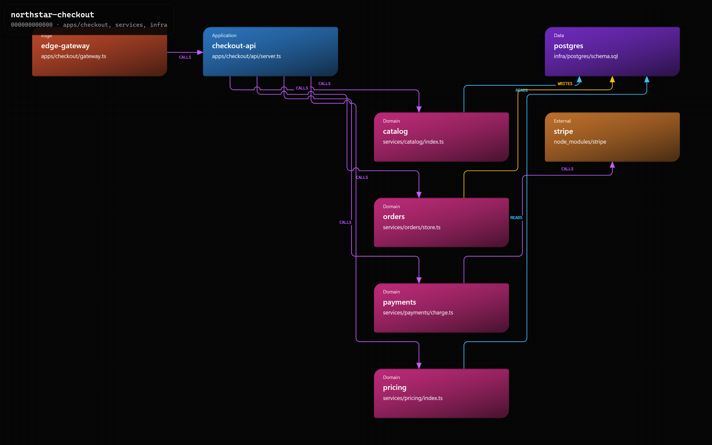
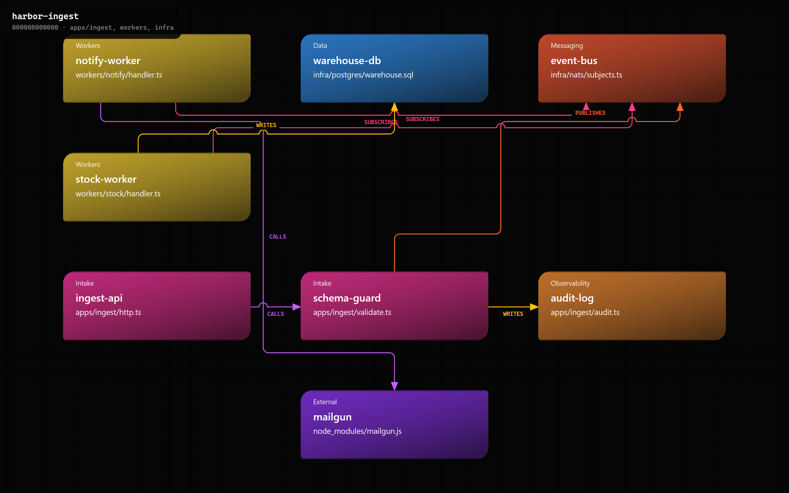
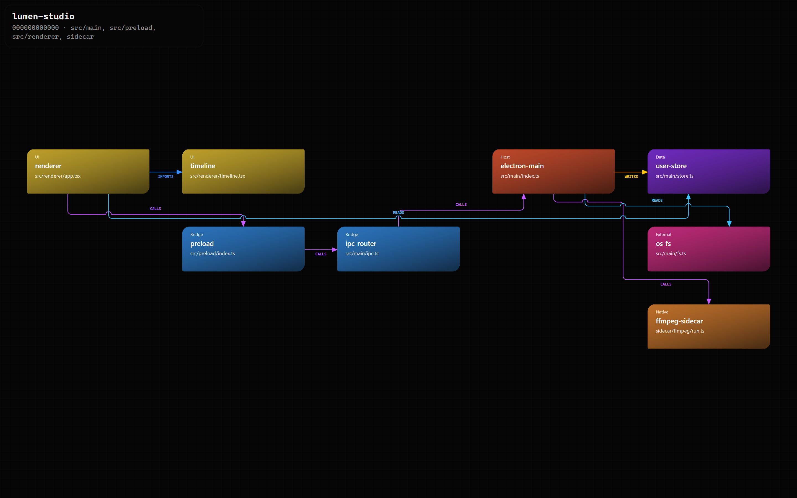
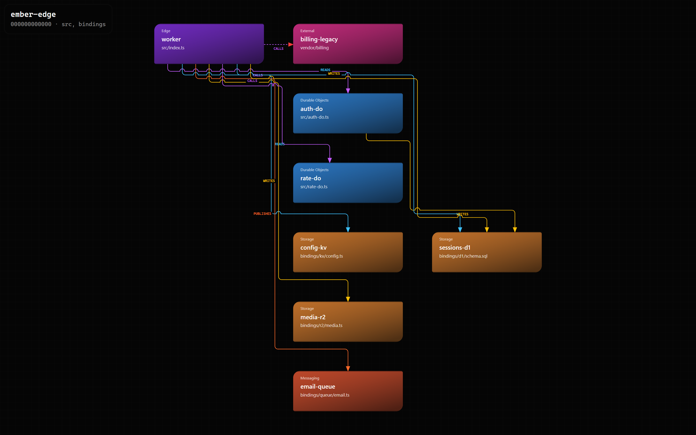

Agent skill
Maintain Code Map
One evidence-backed model of a repository. Agents read Markdown. Humans open the HTML map. The lock records whether that map is still current.
Install
npx skills add gvastethecreator/code-map-skill --skill maintain-code-map
Live maps

Checkout API Gateway, domain services, Postgres, and Stripe.
Event ingest Publish and subscribe workers, a queue, and side effects.
Desktop studio Electron main, preload bridge, UI, and a sidecar.
Edge platform Worker, Durable Objects, D1/KV/R2, and one unknown hop.